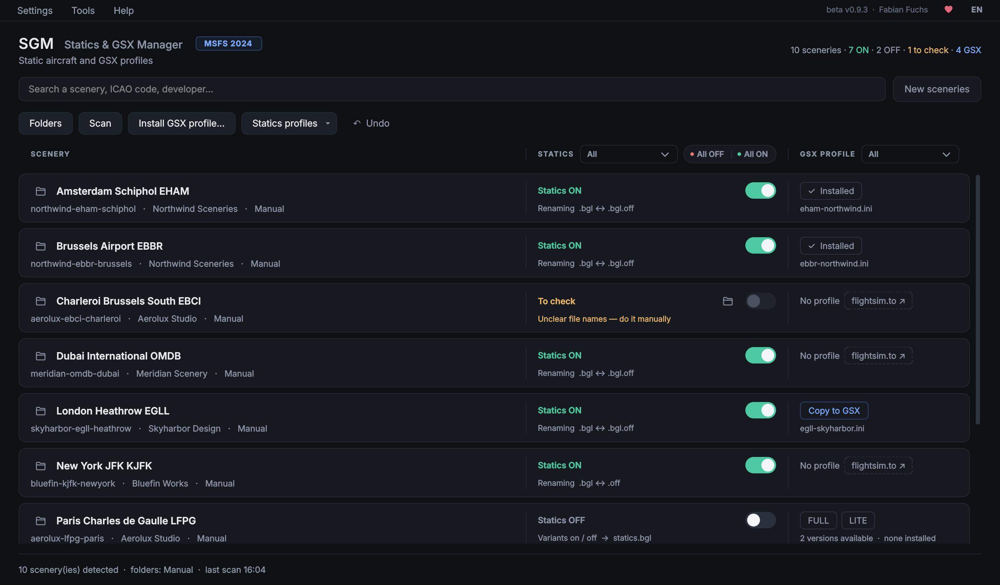

SGM
GUIDE
Every control, explained

1
2
3
4
5
6
7
8
9
10
11
12
13
14
15
16
17
18
19
- 1MenusSettings, Tools (scan, profiles, undo, restore, reports) and Help.
- 2SimulatorMSFS 2024 or MSFS 2020, each with its own folders and settings.
- 3Version, support, languageThe heart supports the project; EN is the interface language (12 available).
- 4SummarySceneries found, statics ON and OFF, sceneries to check, GSX profiles.
- 5Search and NewBy name, ICAO or developer. New sceneries: added since last time.
- 6Folders and ScanWhere SGM looks. Scan rereads your sceneries and your download folders.
- 7Install GSX profilePick a .zip, .7z or .rar, or drop it anywhere on the window.
- 8Statics profilesSave the ON/OFF state of all sceneries and apply it again in one click.
- 9UndoCtrl+Z puts the files of the last action back. F5 scans, Ctrl+F searches.
- 10Column filtersShow only statics ON, OFF or to check, or a GSX status.
- 11All OFF / All ONEvery scenery shown, simple cases only.
- 12SceneryThe folder icon opens it. Right-click to restore its original state.
- 13Statics stateON or OFF, and the developer's method SGM uses.
- 14SwitchOne click. layout.json is updated so MSFS really follows.
- 15To checkUnclear files: never switched, the folder icon lets you do it yourself.
- 16GSX profile installedThe profile shipped with the scenery is already in GSX.
- 17Copy to GSXA profile was found in the scenery: one click installs it.
- 18FULL / LITE / VDGSSeveral versions shipped: pick one, SGM remembers it.
- 19No profileSearches flightsim.to for "ICAO GSX".
Statics ON
Statics OFF
To check: SGM leaves it to you
GSX Pro profile
 SGM Statics & GSX Manager
SGM Statics & GSX Manager